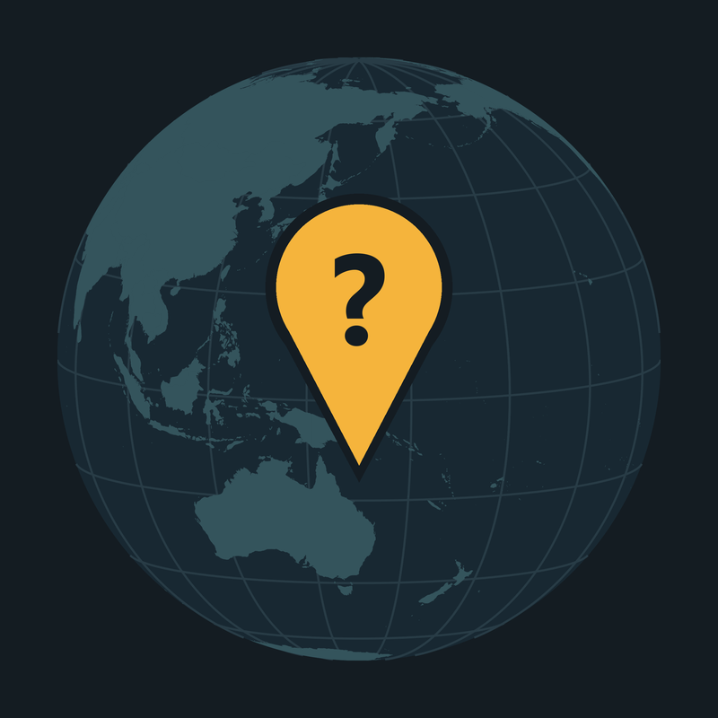

Geography Untangled
Why the world looks the way it does, explained with real maps. Each video takes one question about a surprising place and answers it step by step, with real maps, real footage and sources for every fact.
Watch on YouTube · Instagram · TikTok
Geography Untangled Studio
Geography Untangled Studio is the channel's own publishing tool. It runs only on the channel owner's computer and uses Google's YouTube APIs to fill in the channel's own video details and read the channel's own statistics. It is not offered to anyone else.